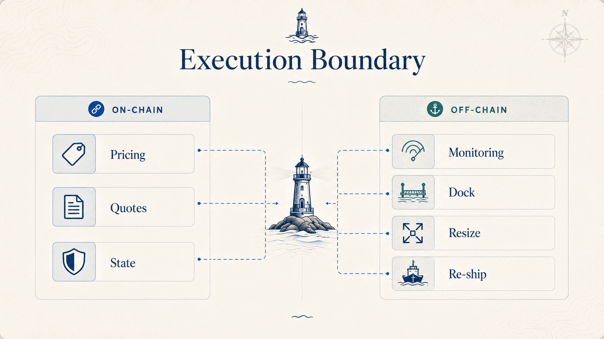

Non-custodial market making on 1inch Aqua — budgets sized to the wallet's actual balance.
Aqua fixes custody: promises instead of deposits, one balance behind many strategies. But promises can exceed the wallet by design — and when flow turns directional, quotes go phantom.
"While Aqua doesn't automatically pause illiquid positions, Makers are strongly recommended to manually dock strategies that become chronically underfunded…" Aqua whitepaper 1.0, §3 — the prescribed fix is a human, awake at 3am
InventorySkewProvider behind SwapVM's stock opcode 30: fee flat while a budget is healthy, quadratic as it drains. Directional — takers get paid to rebalance you.
A keeper that docks any strategy crossing its line and re-ships against the wallet's current balance. The whitepaper's advice, automated in this demo; with a connected wallet it prompts you to sign.
A five-step journey: wallet → put to work → live market → protected → walk away. Nothing deposited, spend without withdrawing.

| 30 fills, same flow | plain | skewed |
|---|---|---|
| Inventory left | 6.3% | 8.1% (+29%) |
| Realized price | 16.00 | 16.32 (+1.99%) |
| 4× amplification | unmanaged | managed |
|---|---|---|
| Unhonorable fills | 43 of 86 | 0 |
| LP value vs hold | −21.8% | −19.7% (+2.7%) |
At 1× and 2× the mechanism costs nothing — budgets never exhaust. It only bites when it is needed.
A local signer lets the Harbormaster act autonomously, on camera.
The same actions require the maker's signature.
A scoped session key would authorize only dock, ship and waterline updates, with limits and expiry.
MCP surface: read-only observability, not the transaction executor.
0x768F…54D9 (skew provider), 0x8A15…9694 (app).Keep your wallet. Put it to work anyway.
ETHGlobal Lisbon 2026 · built on 1inch Aqua + SwapVM